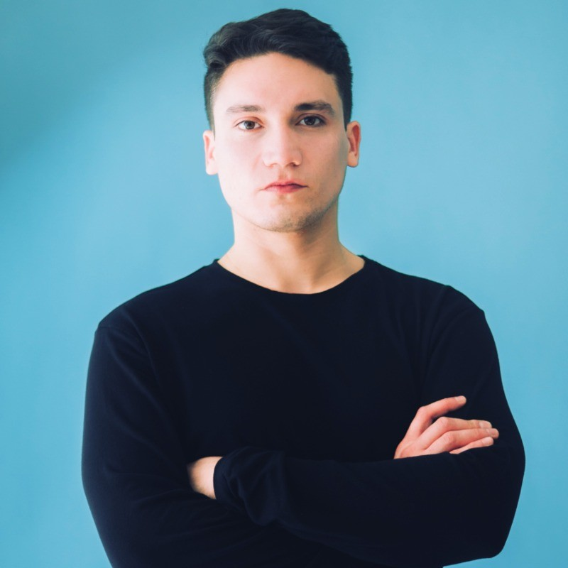
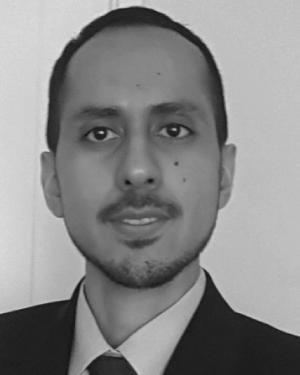

Laboratorio de Procesamiento de Imágenes
Departamento de Ingeniería Eléctrica | Facultad de Ciencias Físicas y Matemáticas | Universidad de Chile
Inicio
Misión
Equipo
Proyectos
Publicaciones
Fotos Graduaciones
Contacto
Bienvenidos
El Laboratorio de Procesamiento de Imágenes se dedica a la investigación, desarrollo y aplicación de técnicas de análisis y procesamiento de imágenes digitales, con un enfoque multidisciplinario.
Misión
Nuestra misión es generar conocimiento y soluciones innovadoras en el campo del procesamiento de imágenes mediante investigación científica, desarrollo tecnológico y colaboración con la industria y la academia.
Equipo
El laboratorio está conformado por investigadores, estudiantes de pre y postgrado, y colaboradores externos.
Profesor
Investigadores Post-Doctorado
Estudiantes de Doctorado
Investigadores
Estudiantes de Pregrado
Alumnos Graduados
Antiguos miembros del laboratorio que dejaron una huella imborrable en la historia.

Diego Maureira
Magister en Ingeniería Eléctrica

Daniel Benalcázar
Doctorado en Ingeniería Eléctrica
Proyectos
Advances in Iris and Face Biometrics: Design of CNNs with spatial invariance, anti-aliasing filters, and new structures for improved accuracy Detección de enfermedades en el embarazo Detección de enfermedades endocrinas utilizando Deep Learning Detección de cáncer en imágenes hispatológicas Development of an iris recognition system based on anti-aliasing techniques, designed to handle image rotation and pupil dilation in databases. Development of a Deep Learning model for the detection of psychiatric disorders using extracellular vesicles extracted from plasma. Detección automática de similitudes entre imágenes de marcas para su registro y protección. /li>
Fiscalización en comercio electrónico basada en inteligencia artificial mediante análisis multimodal de texto e imágenes. Sistema basado en inteligencia artificial para determinar en tiempo real la granulometría del mineral en puntos de extracción.
Publicaciones
Development of a novel deep learning method that transforms tabular input variables into images for the prediction of SLD Neuroevolutionary Convolutional Neural Network Design for Low-Resolution Face Recognition Iris Recognition Using an Enhanced Pre-Trained Backbone Based on Anti-Aliased CNNs Improved Search in Neuroevolution Using a Neural Architecture Classifier With the CNN Architecture Encoding as Feature Vector Face Patches Designed Through Neuroevolution for Face Recognition With Large Pose Variation Development of machine learning models to predict gestational diabetes risk in the first half of pregnancy Iris Recognition Using Low-Level CNN Layers Without Training and Single Matching Extracting Structured Supervision From Captions for Weakly Supervised Semantic Segmentation 3D Iris Recognition using Spin Images A 3D Iris Scanner From a Single Image Using Convolutional Neural Networks Trademark Image Retrieval Using a Combination of Deep Convolutional Neural Networks Fusion of local normalization and Gabor entropy weighted features for face identification